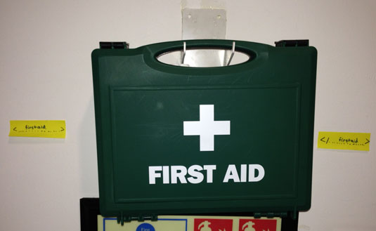
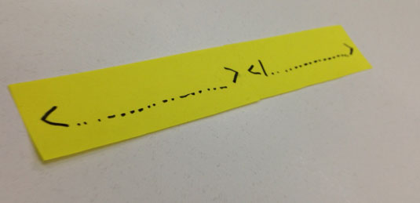

Quebra-cabeças para ensinar HTML
CC-BY-SA por Mozilla, ginger coons, Mark Lesser, Thomas Park e Karen Smith
30 minutos
Explore as capacidades dia Alfabetização Web através dessas atividades de quebra-cabeças desenvolvidas para engajar os participantes com aprendizado offline sobre a web.
Atividade 3 de 6
Leia e participe da Web
Habilidades do Século 21
Colaboração Comunicação Resolução de problemasHabilidades da Alfabetização Web
SintetizeObjetivos
- Aprender as funções das tags HTML.
- Explorar o "básico da web" com tags e componentes de website.
- Explorar a marcação de texto como componente da arquitetura de um site e Mapa de Alfabetização Web.
- Resolver um quebra-cabeça HTML tratando a sintaxe de pesquisa.
Público alvo
- 13+
- Usuário da Web iniciante
Materiais
- Cartões com abertura e fechamento de tags HTML para elementos comuns como
p,h1, andimg.
-
Preparation
These activities are design for offline environments. You will find it helpful to print the acitivies in advance if possible.
Make written sets of commonly used HTML tags on sticky notes. Include all of the tags that would be found in the structure of a standard web page (check out the example like this one). Each post-it should include only one tag, like
<p>with the related closing tag (say,</p>) appearing on another post-it.Througought the activities, learners can collaborate to assist each other and work towards solutions. Mentors or teachers can provide correct solutions to the HTML tag-matching puzzles in the activities below or, if you'd like to add an online component to any of the puzzles, learners can check their HTML for errors in Thimble, Mozilla's online code editor.
-
Human HTML Tag Puzzle, Part One
5 minutesRandomly assign your sticky note HTML tags to participants. Everyone should get one tag.
Ask participants to find the person who has the tag corresponding to their own. This means that the person holding
<p>should find the person holding</p>, the person holding<h1>should find the person with</h1>, and so on.Once participants have found their tag partners, ask them to have a brief chat about the possible meanings of their tags. What might
<h1>do or mean? What purpose might<body>serve? -
Human HTML Tag Puzzle, Part Two
10 minutesNext, arrange the room into rows, numbered 1-7. Each row should be clearly marked, and should have enough room for three people to stand side-by-side.
Make sure every participant still has a tag from part one of the activity. If there aren't enough participants to make up the entire sample document found here, exclude some tags, starting with
<h1>and</h1>.Ask participants to explain to the rest of the group what role they believe their tag plays in the HTML document. Drawing on these answers, see if the group can come to a consensus about which tags serve which functions.
Then, based on the consensus from the previous step, ask participants to move to the row in which they think their tag belongs. If a row has more than one participant in it, ask them to arrange themselves in order, from left to right, based on their understanding of opening and closing tags.
At the end of this activity, pause and ask the group to assess its performance collectively. Do they believe they have created a functioning HTML document? If there are errors in their ordering, ask the participants to "debug" the code, offering placement suggestions to their peers. Continue this debugging, providing guidance as necessary, until participants have replicated the tag order of the document.
-
Markup Mixer
10 minutesIntroduce the activity by explaining that for web browsers to understand how to display a webpage, its contents needs to be "marked up" using a language called HTML. We will mark up real-world objects in a similar way.
Explain that we use a pair of tags to mark up content — one at the start and one at the end of the item. Demonstrate the activity by using post-it notes to create your own start and end tags that describe an object in the room and "wrapping" them with the tags.

Distribute post-it notes that have been prepared with blank start and close tags: <_______> and </_______>. Have others invent their own tag, separate the start and close tags, and mark up an object.

Extend this activity by using photos or posters containing lots of objects, or print-outs of text documents like magazine pages and recipes.
Finally, provide post-it tags for valid HTML elements like img, h1, and p. Explain what each tag stands for, and then have participants mark up a printed webpage.
-
Reflection
5 minutesParticipants can share their puzzle solutions verbally throughout the session or activities. Then they can assess and reflect on their work once it's complete by checking their puzzle solutions with a mentor or by checking their HTML code in Thimble.
You can prompt discussion using questions like these:
- What are the top 5 points about HTML you would teach a friend?
- What did you learn about today in additon to HTML?